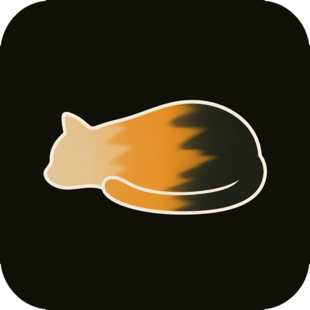

Calico
A desktop companion for the ginger desk panel.
What it does
Calico runs on your computer and shows what your AI agents are doing: which are running, which are waiting on you, and which have finished. It serves the status the ginger desk panel reads, and it has a dashboard, a console, and tools for setting up the panel over USB or Bluetooth. Grok Bot routines and Cursor agents can report to it.
Get it
Calico is open source and runs on Linux for now. Packages for Debian and Ubuntu, Arch, and an AppImage are on the releases page. Each release has checksums and a build attestation, and the Arch package is signed, so pacman can install it straight from the release URL.
The README has the full steps, including how to trust the signing key.
Privacy
Calico keeps its data on your machine. It has no accounts, no analytics,
and no telemetry. The only outside address it ever contacts is
api.cursor.com, and only if you have given it a Cursor API
key.
Signing in to Cloudflare (in development)
We are building an optional relay, so agents that run in the cloud can reach Calico even when your computer is asleep. When it ships, Calico will ask you to sign in to Cloudflare so it can set the relay up for you. It will deploy a small Worker to your own Cloudflare account, which you can see and delete in your dashboard.
The sign-in is designed to work like this:
- You approve it on Cloudflare's own consent screen. Calico never sees your password.
- It asks for one permission, Workers Admin, which is what Cloudflare requires to upload a Worker.
- The access token lasts one hour, stays on your computer, and Calico revokes it as soon as setup finishes.
- Nothing about your account is sent to the Calico project.
- You can review or revoke the access at any time under Connected Applications in your Cloudflare profile.